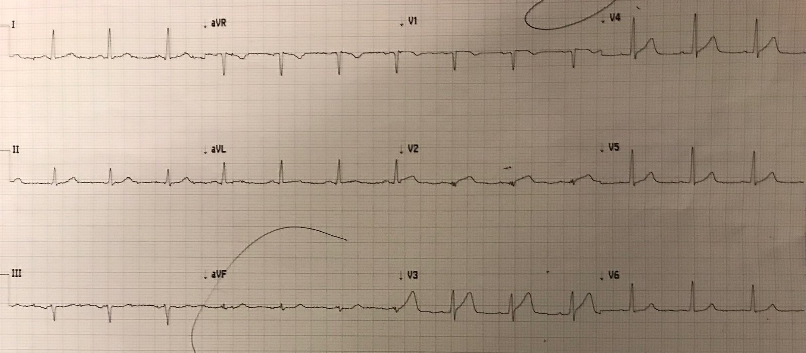
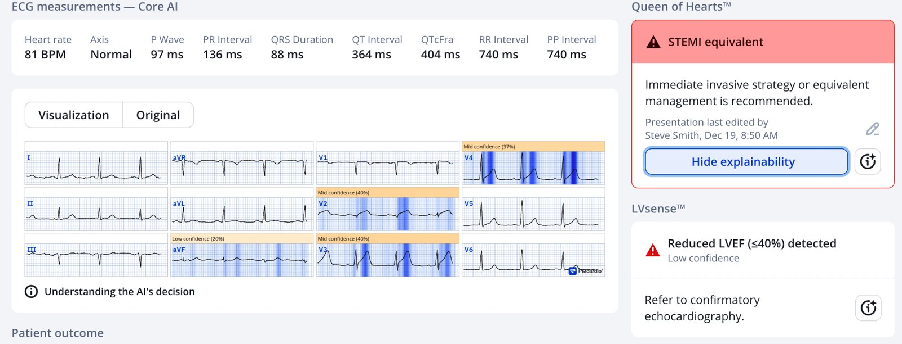
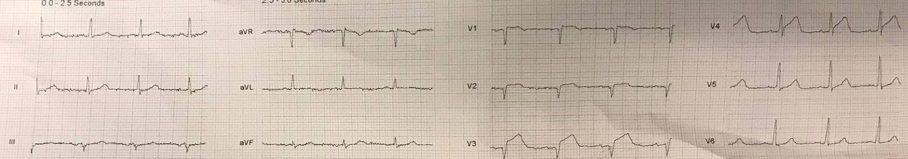
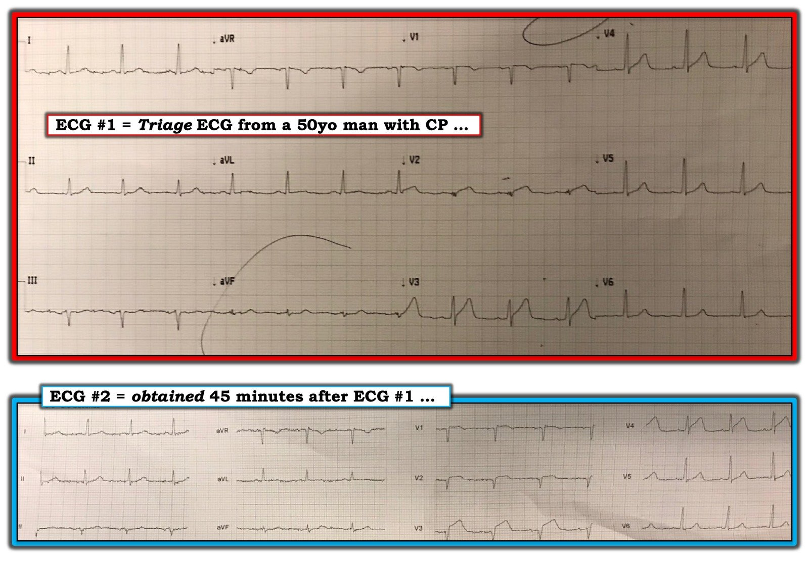

15/03/2019 — Một bệnh nhân 50 mấy tuổi đau ngực đến một cơ sở không có khả năng PCI
Bản dịch tiếng Việt của bài "A 50-something with chest pain presents to a Non-PCI capable facility" – Dr. Smith’s ECG Blog. Giữ nguyên toàn bộ 4 hình ảnh của bản gốc.
Một độc giả nhiệt thành đã gửi cho tôi ca này. Anh ấy học đọc các điện tâm đồ tinh tế tại đây.
Ca bệnh:
Một bệnh nhân 50 mấy tuổi đến khám vì đau ngực. Một điện tâm đồ lúc phân loại (triage) được ghi và đưa cho bác sĩ khoa cấp cứu (ED) xem:


Bạn nghĩ gì? (QTc-B là 427 ms).
= = =
Bản ghi này được nhắn tin cho tôi mà không kèm thông tin gì, và đây là câu trả lời của tôi:
- “Tôi nghĩ trông giống tắc LAD.”
= = =
Vì sao tôi nói vậy?
- Có ST chênh lên (STE) rất ít ở V2, nhưng đi kèm một QRS rất nhỏ.
- Đoạn ST ở V2 lồi hướng lên, hoặc cùng lắm là thẳng
- QRS bắt đầu bằng một sóng Q
- Có QRS phân mảnh (xuống-lên-xuống-lên-xuống-lên)
- Có ST chênh lên ở V3 với đoạn ST khá thẳng
Nếu bỏ qua tính chất lồi, và dùng công thức 4 biến, ta được:
- STE60V3 = 3.0
- QTc = 427
- RAV4 = 12.5
- QRSV2 = 2
- Giá trị = 21.73. Đây là một giá trị rất cao và ủng hộ mạnh mẽ tắc LAD. Điểm cắt tốt nhất là 18.2 với độ nhạy và độ đặc hiệu khoảng 85-90%.
Tôi (Smith) đã gửi bản ghi này cho Queen of Hearts (“STEMI/tương đương STEMI — phòng thông tim (cath lab) ngay!):


= = =
Sau đó độc giả kể cho tôi chi tiết:
- “Điện tâm đồ được đưa cho đồng nghiệp của tôi xem, anh ấy cho rằng nó bình thường. Anh ấy ký xác nhận là “Không STEMI” (về mặt kỹ thuật thì đúng là vậy).
- Sau đó tôi nhận bệnh nhân trên bảng phân công mà chưa xem điện tâm đồ.
- Rồi tôi thấy điện tâm đồ và tự nhủ “Trời ơi!”
- Tôi cũng nghĩ trông giống tắc LAD.
- Rồi tôi thấy bệnh nhân đang ôm chặt ngực.
- Tôi cho aspirin và tiêm heparin liều bolus, rồi gọi trực thăng để chuyển sang cơ sở có PCI.
- Tôi đã sợ họ thậm chí sẽ không nhận bệnh nhân.
- Trực thăng đến và chúng tôi ghi thêm một điện tâm đồ 25 phút sau bản đầu tiên, ngay lúc bệnh nhân đang được đưa lên cáng …”.
= = =


Bây giờ đã là một STEMI rõ ràng (Xem các chuyển đạo V3 và V4).
= = =
Sau đó tôi cho 50 mg (liều đầy đủ) TNK-tPA (tenecteplase)
= = =
Kết cục:
Bác sĩ tim mạch ở cơ sở tiếp nhận báo lại rằng bệnh nhân hết đau khi đến nơi. [Không có dữ liệu điện tâm đồ nào được cung cấp. Điều này quan trọng vì nếu điện tâm đồ không cho thấy bằng chứng tái tưới máu thì có chỉ định chụp mạch vành ngay +/- PCI bất kể tình trạng đau]
“Anh ấy nói bệnh nhân gần như hết đau khi đến phòng cấp cứu (ER) của họ nhờ TNK-tPA, và do đó, vì bệnh nhân đã được dùng TNK, phác đồ là chờ 3-24 giờ vì nguy cơ chảy máu. Nếu bệnh nhân vẫn còn đau ngực đáng kể, họ đã đưa đi chụp ngay.”
Vì bệnh nhân hết đau, họ đã chờ 14 giờ (đến sáng hôm sau) mới đưa đi THÔNG TIM:
Chụp mạch vành: tắc 100% stent cũ ở LAD (kèm hẹp 95% ở đoạn gần stent); hẹp 90% RCA, và hẹp 70% động mạch mũ, nên bác sĩ đã đặt stent cả ba.
- Không nêu rõ có dòng chảy TIMI 3 hay không.
- Troponin I của bệnh nhân đạt đỉnh 76 ng/mL.
Độc giả đã làm rất tốt!!!
= = =
======================================
BÌNH LUẬN CỦA TÔI, bởi KEN GRAUER, MD (15/3/2019 — Cập nhật cho WordPress ngày 19/12/2025 ):
Đây là một ví dụ quan trọng về nhận diện hình dạng. Ca này do một người theo dõi nhiệt thành của Dr. Smith’s ECG Blog gửi đến. Bệnh nhân là một người đàn ông 50 mấy tuổi, đến khoa cấp cứu (ED) vì đau ngực. Bản ghi ban đầu lúc phân loại được trình bày ở điện tâm đồ #1. Bốn mươi lăm phút sau — bản ghi thứ 2 ( = điện tâm đồ #2) được ghi. Cho rõ ràng — tôi đã đặt cả hai bản ghi cạnh nhau trong Hình 1.
- Dr. Smith đã trình bày chi tiết một cách chuyên nghiệp các lý do vì sao hình dạng QRST ở chuyển đạo V2 và V3 của điện tâm đồ #1 có giá trị chẩn đoán (cho đến khi chứng minh được điều ngược lại) tắc LAD cấp.
CÂU HỎI: Ngoài chuyển đạo V2 và V3 — Có bao nhiêu chuyển đạo khác trong điện tâm đồ #1 bất thường?
- NGOÀI RA — Bạn có nghĩ có thể có vấn đề về vị trí đặt điện cực ở điện tâm đồ #1 không?
= = =
Hình 1: 2 điện tâm đồ trong ca hôm nay.


= = =
BÌNH LUẬN: Như Dr. Smith đã nêu — xét việc điện tâm đồ này được ghi tại khoa cấp cứu, các chuyển đạo V2 và V3 gần như có giá trị chẩn đoán tắc LAD cấp. Dù vậy, bản ghi này đã được đọc là “bình thường” khi được xem lần đầu. Vì thế — rất đáng để mổ xẻ các dấu hiệu trên điện tâm đồ #1.
- Ngoài các dấu hiệu Dr. Smith đã nêu — hình dạng của phức bộ QRST ở chuyển đạo V2 phải “đập ngay vào mắt” bạn! Đoạn ST dạng “mặt mếu” (tức là dạng vòm) được đội lên trên bởi một đỉnh sóng T đầy đặn hơn mức đáng có đơn giản là không tương xứng với phức bộ QRS rất nhỏ ở chuyển đạo này. Đây là một “bức tranh” mà ở một bệnh nhân đau ngực mới xuất hiện — lẽ ra phải nói với bạn rằng: “Tôi là một OMI cấp cho đến khi bạn chứng minh được rằng tôi không phải.”
- Để ủng hộ giả định rằng chuyển đạo V2 là cấp tính — ta cần tìm được ít nhất một chuyển đạo lân cận có ST chênh lên. Như Dr. Smith đã nêu — ST chênh lên 2mm tại điểm J với đoạn khởi đầu “khá thẳng” ở chuyển đạo V3 rõ ràng là bất thường. KHÔNG cần thêm gì ngoài 2 chuyển đạo lân cận này ở bệnh nhân đau ngực mới xuất hiện này để biện minh cho việc chuyển ngay đến cơ sở có PCI gần nhất.
NHƯNG — Điều quan trọng là phải nhận ra Các Dấu hiệu Khác:
- Khi tắc LAD đoạn gần (trái với đoạn giữa hoặc đoạn xa), ngoài ST chênh lên ở các chuyển đạo ngực phía trước — thường sẽ có kèm thay đổi ở chuyển đạo chi dưới dạng ST chênh lên (có thể tinh tế) ở chuyển đạo aVL + ST-T chênh xuống ở các chuyển đạo thành dưới. Trên điện tâm đồ #1 — có gợi ý ST chênh lên nhẹ ở chuyển đạo aVL — và có những thay đổi đoạn ST dẹt tinh tế-nhưng-có-thật ở mỗi chuyển đạo trong 3 chuyển đạo thành dưới. Trong số đó, chuyển đạo aVF rõ rệt nhất — ở chỗ nó cho thấy rõ một đoạn ST thẳng đuỗn (nếu không muốn nói là hơi chênh xuống), với góc gập đột ngột dẫn vào một sóng T cao hơn mức đáng có khi xét biên độ rất nhỏ của phức bộ QRS ở chuyển đạo aVF này.
- LƯU Ý: Những thay đổi ở chuyển đạo chi này rất tinh tế! Nhưng, trong bối cảnh ST chênh lên bất thường rõ ở V2 và V3 ở bệnh nhân đau ngực mới xuất hiện này — tôi tin rằng chúng ủng hộ mạnh mẽ khả năng tắc LAD đoạn gần cấp.
- Tiếp theo —trong bối cảnh ST chênh lên bất thường rõ ở chuyển đạo V2 và V3 — tôi đã đọc ST chênh lên nhẹ-nhưng-có-thật ở các chuyển đạo lân cận V1 và V4 là bất thường. Tôi cảm thấy điều này càng ủng hộ thêm rằng tắc LAD đoạn gần cấp đang diễn ra.
- Nhìn lại (hồi cứu) — tôi cảm thấy việc xem điện tâm đồ #2 (trong Hình 1) đã khẳng định rằng ST chênh lên tinh tế mà tôi vừa nhắc tới ở chuyển đạo V1 và V4 của điện tâm đồ #1 là có thật — vì các bất thường ở cả hai chuyển đạo V1 và V4 đã trở nên rõ hơn hẳn trên điện tâm đồ thứ 2 này, được ghi 45 phút sau.
Cuối cùng — tôi nghi ngờ có đặt sai vị trí ít nhất là điện cực V2 ở điện tâm đồ #1. Đó là vì tăng tiến sóng R khi ta đi từ chuyển đạo V1-sang-V2-sang-V3 trên điện tâm đồ #1 đơn giản là không hợp lý về mặt sinh lý (tức là sóng S gần như biến mất ở chuyển đạo V2, với phức bộ QRS nhiều pha, gần như đẳng pha (null) này — rồi sau đó sóng S lớn lại xuất hiện trở lại ở chuyển đạo V3). Nhận thấy rằng nhiều thứ đã thay đổi trên điện tâm đồ #2 cùng với diễn tiến của ổ nhồi máu và sự hình thành các sóng Q sâu ở thành trước (phức bộ QS) — Chẳng phải sự tăng tiến của các phức bộ QRS và sóng ST-T qua các chuyển đạo ngực trên điện tâm đồ #2 trông hợp lý hơn sao?
- Vì các bất thường trên điện tâm đồ ban đầu đã không được nhận ra ở điện tâm đồ #1 — rất có thể việc nghi ngờ đặt sai vị trí một hoặc nhiều điện cực ngực, và ghi lại điện tâm đồ ngay lập tức có thể đã cho một bản ghi lại với nhiều chuyển đạo hơn biểu hiện dấu hiệu bất thường, nhờ đó có thể phát hiện sớm hơn.
= = =
ĐIỀU CỐT LÕI: Việc điện tâm đồ #1 ban đầu được đọc là “bình thường” ở bệnh nhân đau ngực mới xuất hiện này — có nghĩa là vẫn còn “việc phải làm” trong lĩnh vực đào tạo đọc điện tâm đồ. Thay vì tuân thủ cứng nhắc các hướng dẫn STEMI dựa trên con số:
- Hãy nhớ rằng tỷ lệ hiện mắc bệnh tim cấp tăng lên rất nhiều ở một người trưởng thành ở độ tuổi nhất định đến khoa cấp cứu vì đau ngực mới khởi phát.
- Khi mức độ lệch đoạn ST chỉ vừa phải — HÌNH DẠNG đoạn ST trở nên quan trọng hơn nhiều.
- Dù các thay đổi có thể tinh tế — điều thiết yếu là phải soi kỹ cả 12 chuyển đạo, để xem có một “câu chuyện” nhất quán đang được kể hay không. Làm như vậy sẽ thấy không dưới 8 trong số 12 chuyển đạo trên điện tâm đồ #1 có ít nhất những dấu hiệu bất thường tinh tế — mà khi được diễn giải cùng nhau, kết hợp với hình ảnh bất thường rõ ràng ở chuyển đạo V2 và V3, tạo nên một lập luận thuyết phục cho tắc LAD cấp cho đến khi chứng minh được điều ngược lại.
= = =
= = =